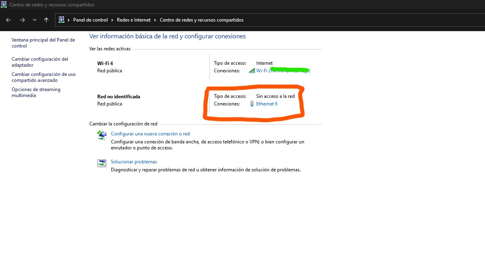
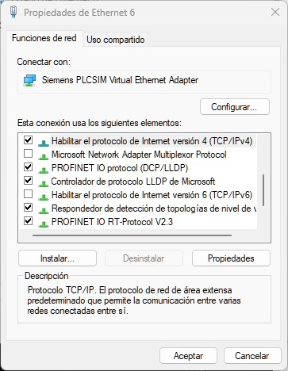

0. Configuración IP y enlace físico
Uno de los primeros pasos para realizar esta práctica consiste en realizar la configuración IP de un computador así como la comunicación fisica entre dispositivos como lo son HMI, PLC:
Para ello se utilizaron los siguientes elementos:
- Swicheador
- PLC S7-1200 (SIEMENS)
- Pantalla HMI KTP600 Basic color PN
- Computador (Preferentemente Portatil)
Cada una de la especificaciones son relevantes ya que se configurarán con el programa que se debe cargar al dispositivo. Tenga en cuenta las especificaciones de su PLC y HMI que en muchas ocasiones la información se encuentran al reverso del dispositivo o en alguna parte visible de el.

Una vez conectado todo el dispositivo, identifique la dirección de su PLC, HMI para posteriormente asignar una dirección IP estatica a su PC, esto con la finalidad de poder concretar una línea de comunicación reconocible en todo momento para con su PLC.
Nota: El puente entre todos los dispositivos será su
Swicheadorpor lo que tenga en cuenta que no debe desconectarlo en ningún momento.
Su Swicheador se comunica a través del puerto SRJ45 donde el cableado es tipo UTP para la comunicación entre Swicheador-Computador. El tipo de cable debe estar regido por la norma TIA/EIA 568B o TIA/EIA 568A que forman un enlace recto en su protocolo de comunicación.
0.1. Configuración IP del PC
- Dirijase a su centro de redes y recursos compartidos, en las que para versiones de
Windows 11puede insertar la siguiente dirección en su explorador de archivos:
Panel de control\Redes e Internet\Centro de redes y recursos compartidos
Esto abrirá la ventana donde deseamos concretar una configuración con una red alámbrica (encerrado en color rojo).

- Presione en las letras azules que para el caso de la imagen anterior es
Ethernet 6. verá una ventana de estado de esa red como la siguiente:

- Pulse sobre el botón de propiedades y conceda los permisos necesarios para poder abrir la siguiente ventana en la cual clickeará dos veces sobre la opción
Habilitar el protocolo de Internet versión 4 (TCP/IPv4):

-
Al abrir las propiedades
TCP/IPestablezca una configuración similar a la siguiente, donde:- Dirección IP: es establecida por usted teniendo en cuenta que no debe ser igual a otras redes con las que esté en comunicación en el
Swicheador. - La Mascara de Subred: la proporciona la interfaz, aunque por si acaso puede colocar
255.255.255.0tal como en la imagen de abajo. - Puerta de enlace: no es nada mas y nada menos que la dirección del Swicheador.
- Dirección IP: es establecida por usted teniendo en cuenta que no debe ser igual a otras redes con las que esté en comunicación en el

- Corrobore si su dirección
IPha realizado un enlace exitoso ejecutando el siguiente comando enPowershelloCMDde acuerdo a la direcciónIPque proporcionó:
ping 192.168.0.211
En respuesta positiva encontrará una respuesta como la siguiente:
Haciendo ping a 192.168.0.211 con 32 bytes de datos:
Respuesta desde 192.168.0.211: bytes=32 tiempo<1m TTL=128
Respuesta desde 192.168.0.211: bytes=32 tiempo<1m TTL=128
Respuesta desde 192.168.0.211: bytes=32 tiempo<1m TTL=128
Respuesta desde 192.168.0.211: bytes=32 tiempo<1m TTL=128
Estadísticas de ping para 192.168.0.211:
Paquetes: enviados = 4, recibidos = 4, perdidos = 0
(0% perdidos),
Tiempos aproximados de ida y vuelta en milisegundos:
Mínimo = 0ms, Máximo = 0ms, Media = 0ms
- Siguiendo con el mismo comando, compruebe su comunicación con la puerta de enlace, tal como:
ping 192.168.0.254
Si existen otros dispositivos conectados, pruebe con la dirección de ese dispositivo.
En el siguiente paso se realizará un proyecto en el software TIA PORTAL V16.